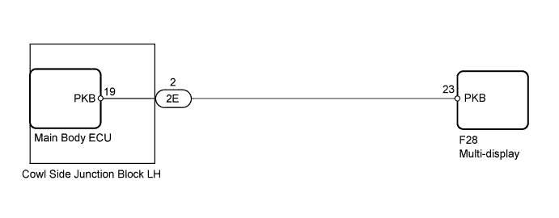
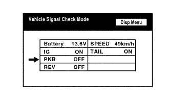
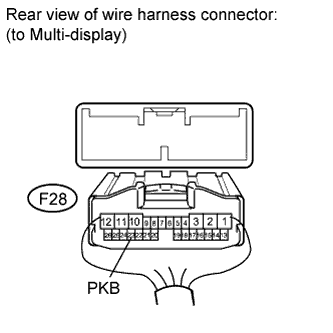
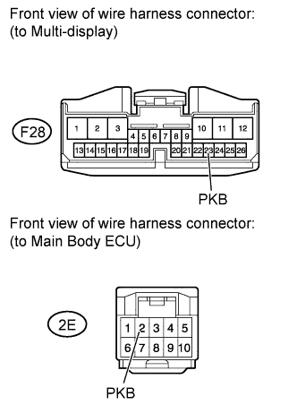

NAVIGATION SYSTEM > Parking Brake Switch Circuit |

| 1.CHECK PARKING BRAKE (DISPLAY CHECK MODE) |
 |
Enter the "Display Check" mode and select "Vehicle Signal Check" (Click here).
Check that the display changes between ON and OFF according to the parking brake operation.
| Parking Brake Position | Display |
| Applied | ON |
| Released | OFF |
|
| ||||
| OK | ||
| ||
| 2.CHECK MAIN BODY ECU (PARKING BRAKE SIGNAL) |
Disconnect the F28 display connector.
 |
Measure the voltage according to the value(s) in the table below.
| Tester Connection | Condition | Specified Condition |
| F28-23 (PKB) - Body ground | Engine switch on (IG), parking brake applied | 11 to 14 V |
| F28-23 (PKB) - Body ground | Engine switch on (IG), parking brake released | Below 1 V |
|
| ||||
| OK | ||
| ||
| 3.CHECK HARNESS AND CONNECTOR (MULTI-DISPLAY - MAIN BODY ECU) |
Disconnect the F28 display connector.
Disconnect the 2E ECU connector.
 |
Measure the resistance according to the value(s) in the table below.
| Tester Connection | Condition | Specified Condition |
| F28-23 (PKB) - 2E-2 (PKB) | Always | Below 1 Ω |
| F28-23 (PKB) - Body ground | Always | 10 kΩ or higher |
|
| ||||
| OK | |
| 4.REPLACE MAIN BODY ECU |
Temporarily replace the ECU with a new or normally functioning one.
Check that the parking brake signal is displayed on the multi-display.
|
| ||||
| OK | ||
| ||